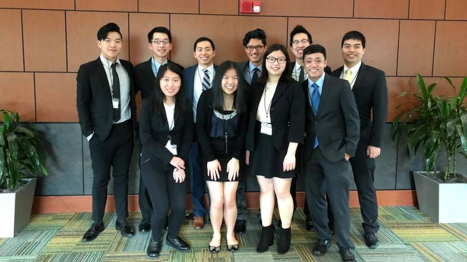
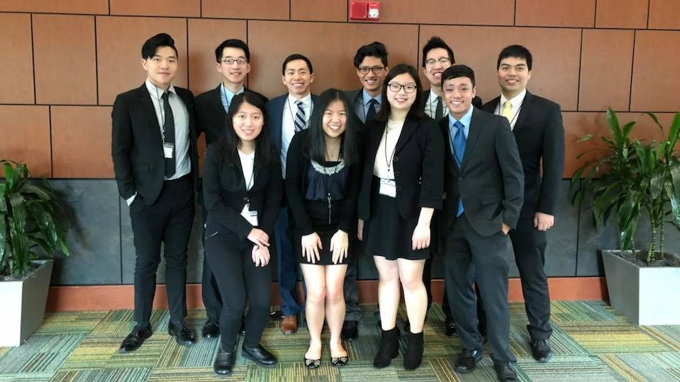

Who am I?
MY PROFESSIONAL SIDE VS. EVERYDAY ME
 

Alright, let's start with my professional side. I'm Cassie Xia, a recent GT electrical engineering graduate with three summers of internship experience varying from automation to modeling to fault analysis. I have an academic interest in telecommunications and power systems engineering, and I currently hold a full time position in software engineering at General Dynamics Mission Systems. During college, I've been active in WECE, SAFE, and StemPower, all diversity groups because I am a minority woman in a heavily male dominated field. In the near future, I will be starting my graduate studies at Johns Hopkins University in electrical and computer engineering, telecommunications and networking option. Check out my resume for more details!
That's not all though! Outside of my full time job and soon grad school, I've taken on various hobbies. Before college, I would either play the violin, draw, play chess, or do abstract math problems. I used to play a lot of League of Legends and Hearthstone, and I ended up with decent ranks for both! There are some other games here and there that I also used to play, but I mainly played to meet people all over the country through active Discord and Skype groups. I'm not good at badminton, but I really loved playing with my friends in college. Now, I'm working on Chinese calligraphy and hoping to get better through practice!
Here are some fun facts about myself! I can't eat spicy food, but otherwise I love trying out new dishes and cuisines. I have simple taste; I really like fried chicken and mashed potatoes. When I have ample time to relax, I watch anime, but I usually end up only watching a few episodes per month. It's hard to distinguish my Mandarin from a native, despite being American born! One thing I really want to do is to go stargazing. When I have more economic stability, I want to travel and explore many more places, take lots of pictures, and eat lots and lots of food!
Hope I didn't bore you yet! Please check out the rest of my website to look at my work. That's all I have for here, keep on exploring!